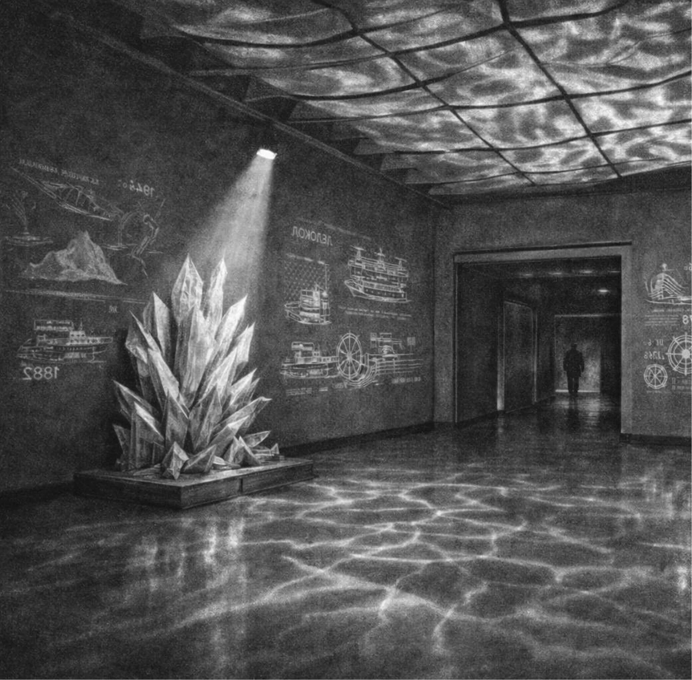
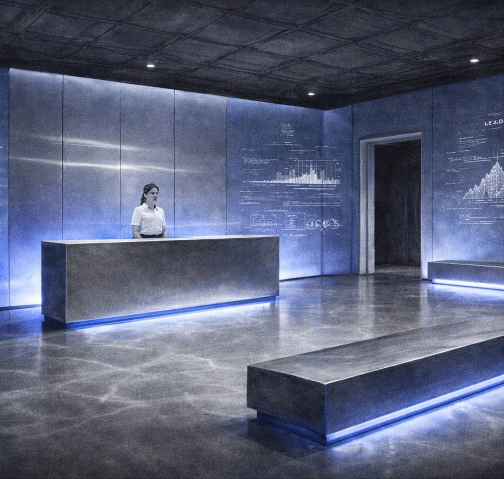
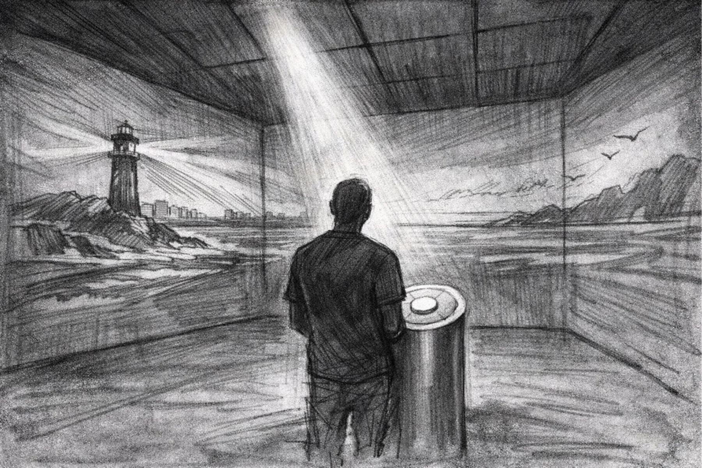
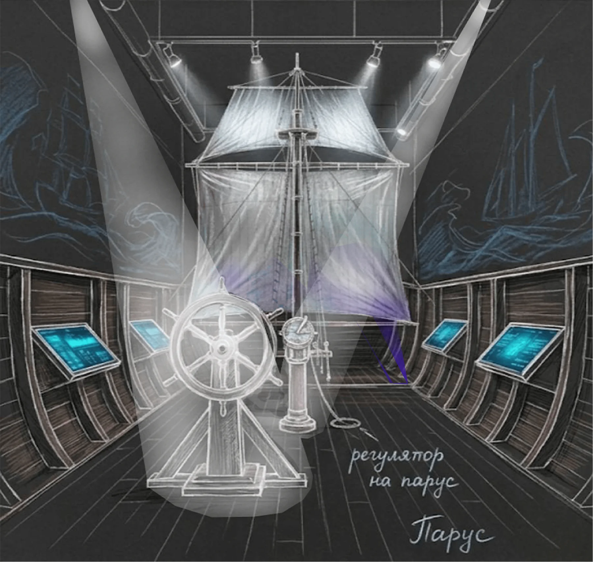
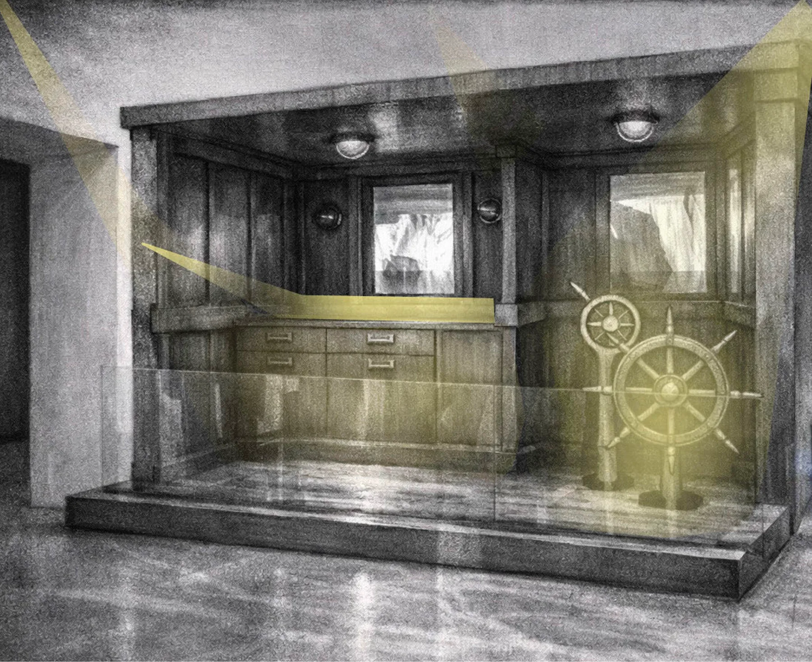
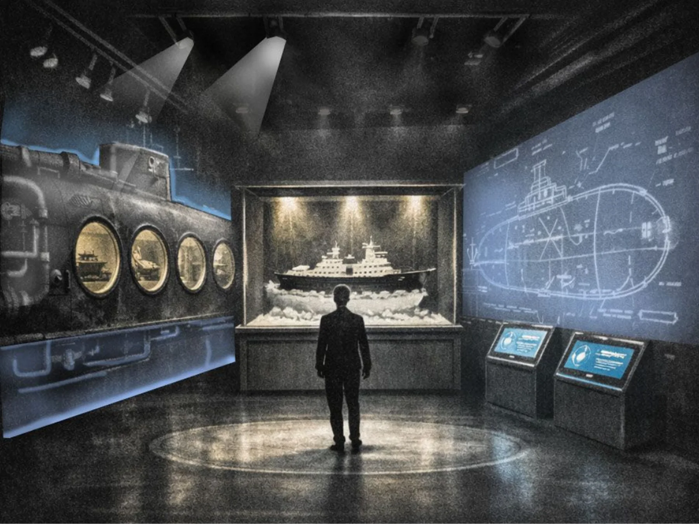
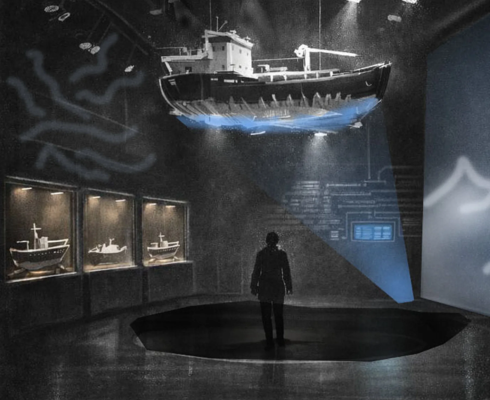
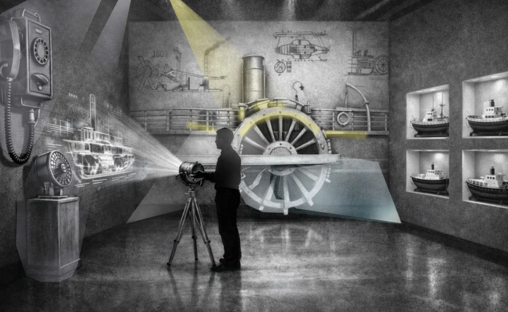

Назовите соответствия в формате: «зал 1 — zone-02, зал 2 — zone-04…». На схеме отмечено 9 залов, а исходных визуализаций сейчас 8 — отдельно скажите, для какого зала пока нет изображения.







